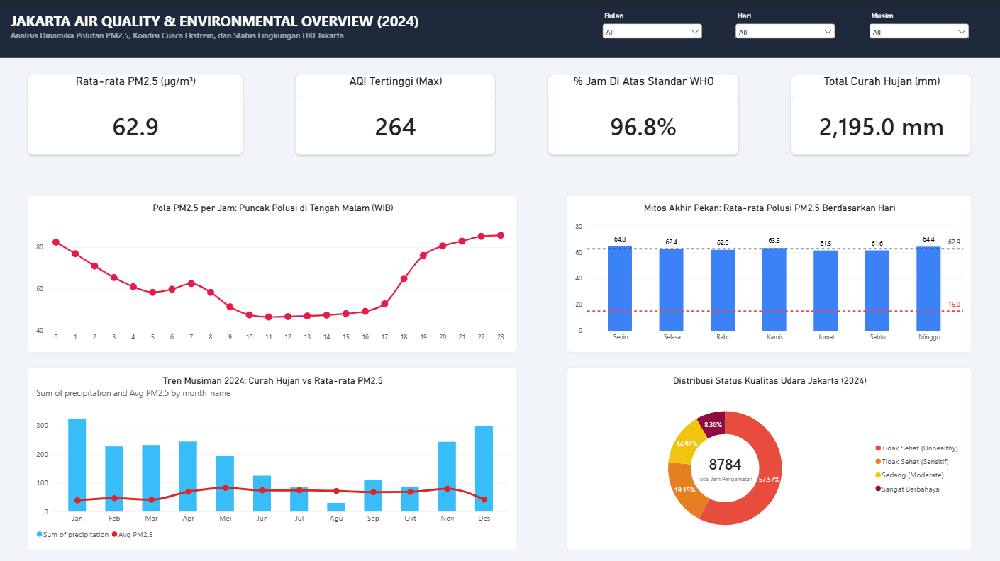

Halo, saya Adnin Danil Azkia. Seorang Data Analyst yang berfokus pada analisis data eksploratif (EDA), pembersihan data dengan Python/SQL, dan perancangan dashboard interaktif eksekutif menggunakan Power BI.
Pandas, NumPy, Requests, Data Cleaning, Querying Relational DB
Executive Dashboarding, Data Modeling, Custom DAX Measures
Pivot Tables, Advanced Formulas, Business Calculation
API Data Ingestion, Version Control, Collaborative Workflows
Setiap proyek berorientasi pada pemecahan masalah bisnis nyata.

Menganalisis 8.784 titik data historis per jam untuk membedah krisis polusi udara Jakarta (PM2.5). Mematahkan mitos bahwa hari Minggu udaranya bersih (polusi Minggu 64,4 µg/m³ sama buruknya dengan Senin 64,8 µg/m³), serta membuktikan puncak bahaya polusi terjadi pada jam 23.00 malam.
Menganalisis pola retensi pelanggan bulanan (*Cohort Analysis*) dan segmentasi RFM untuk mengoptimalkan strategi kampanye retensi pembeli.
Saya selalu terbuka untuk diskusi seputar data analytics, peluang kerja penuh waktu (*full-time*), maupun proyek lepas (*freelance*).
© 2026 Adnin Danil Azkia. Built with HTML, Tailwind CSS & Hosted on GitHub Pages.